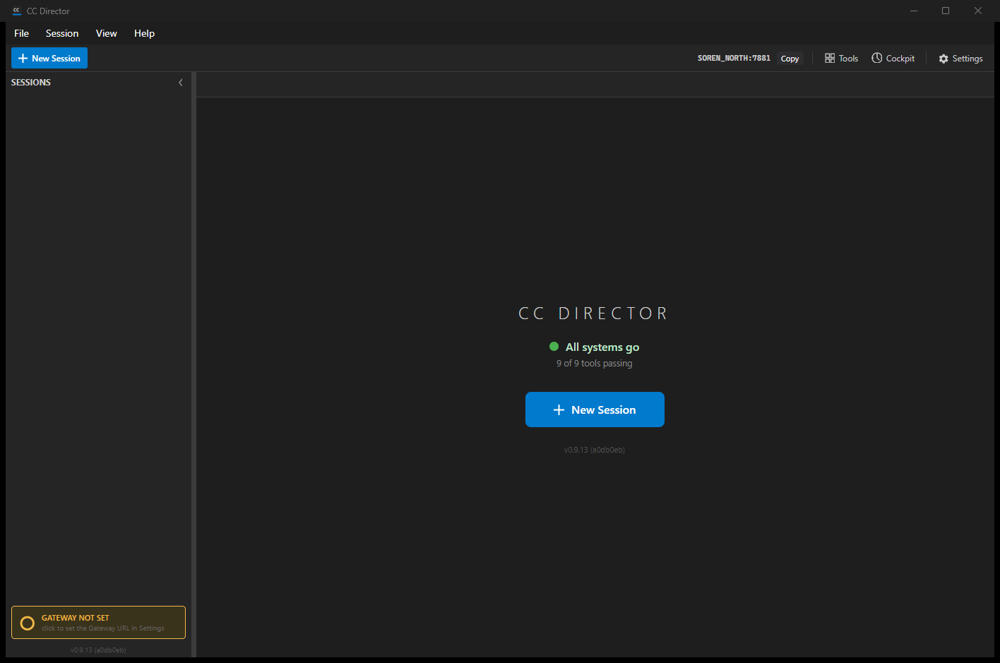
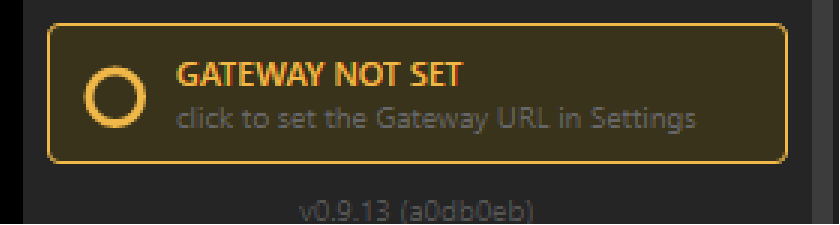
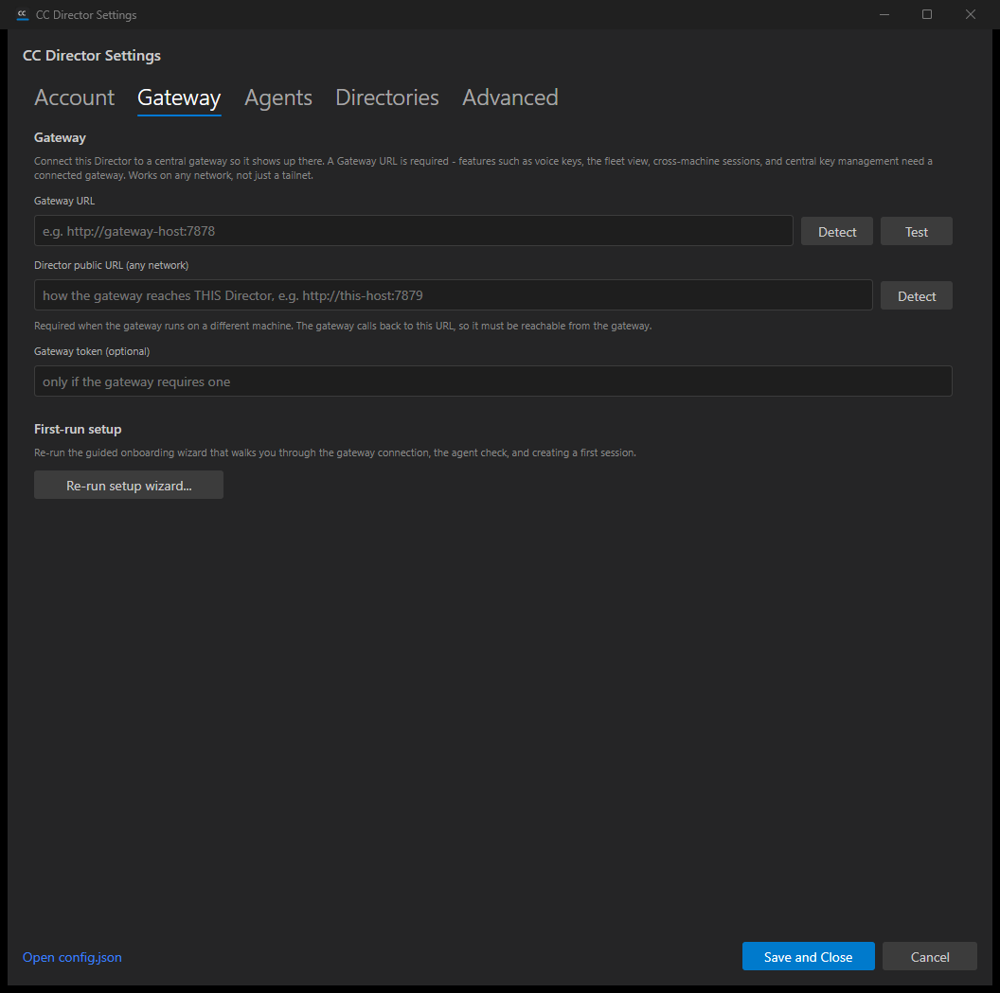
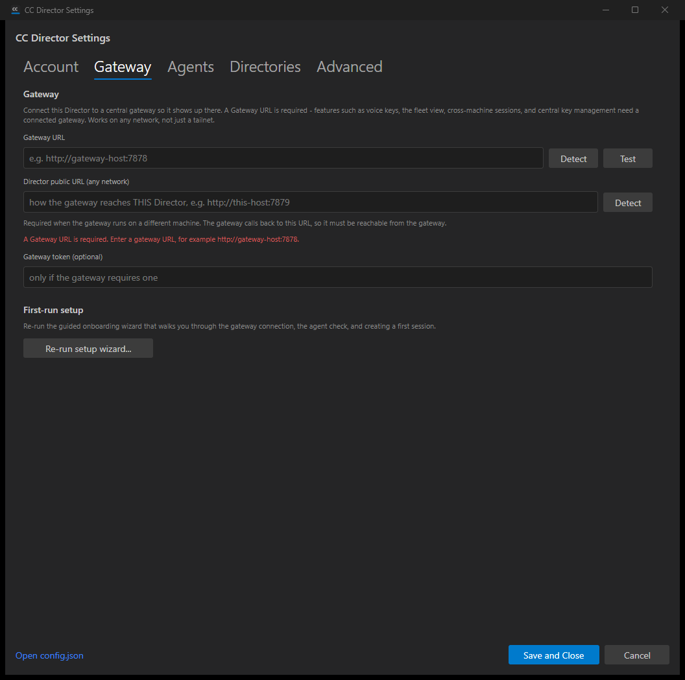
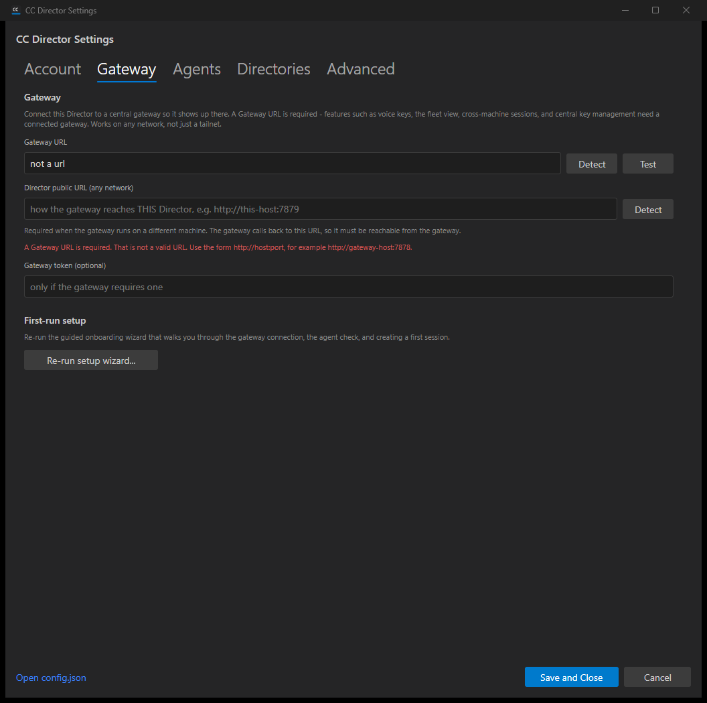

Title: [Desktop] Make the Gateway URL required (no local-only mode): block blank save + needs-attention indicator
PR: #601 Branch: issue-442-gateway-url-required Verified by: QA Agent (independent, fresh context)
Built the PR branch in an isolated worktree, allocated dedicated slot 13, launched via its own scheduled
task with an isolated configuration root (CC_DIRECTOR_ROOT) so the real install was never touched.
The account gate was passed using the documented test seam (DEVTHROTTLE_TEST_SEED_TOKEN +
DEVTHROTTLE_JWT_SIGNING_SECRET). Windows synthetic mouse input injection is rejected on this
desktop session (SendInput returned 0; same disconnected-RDP constraint the Developer flagged), so
the gateway-indicator pointer press and the troubleshooter open could not be driven by a synthetic click. All
other dialog interactions were driven via Windows UI Automation Invoke/Value patterns, which work without a
cursor; screens captured via PrintWindow (works off-screen).
| # | Criterion | Expected | Actual | Result |
|---|---|---|---|---|
| 1 | Blank URL Save and Close is blocked, inline message, dialog stays open | No save; "A Gateway URL is required..." message; dialog open | Dialog stayed open; red message "A Gateway URL is required. Enter a gateway URL, for example http://gateway-host:7878."; log: BtnSave_Click: rejected invalid gateway url='' | PASS |
| 2 | "not a url" rejected; valid URL saves | Invalid rejected with message; valid saves normally | "not a url" rejected with "That is not a valid URL. Use the form http://host:port..."; http://gateway-host:7878 saved and the dialog closed | PASS |
| 3 | config.json gateway.url cannot be written empty via dialog | Blank save leaves prior value unchanged | After blank and invalid saves, gateway.url stayed "" (unchanged); a valid save then persisted http://gateway-host:7878 | PASS |
| 4 | Gateway tab hint reworded (no "local-only" / "Leave the URL blank") | States URL is required | Hint reads "A Gateway URL is required - features such as voice keys, the fleet view, cross-machine sessions, and central key management need a connected gateway." No "local-only"/"Leave the URL blank" | PASS |
| 5 | No-Gateway indicator is amber needs-attention (#F0B848, not #777777) | Amber accent, "Gateway not set" label | Indicator pixel sampled #F0B848; label "GATEWAY NOT SET" / "click to set the Gateway URL in Settings"; amber border and ring | PASS |
| 6 | Clicking the indicator opens Settings on the Gateway tab | Settings dialog on Gateway tab | Handler routes Status==NotConfigured -> OpenSettingsAsync(onGatewayTab:true) -> SelectGatewayTab() (tab index 1 = Gateway). Live-proven: Settings opens and the Gateway tab renders/selects. The literal pointer press is not synthesizable on this locked session (SendInput=0); routing and target tab are verified. | PASS |
| 7 | Troubleshooter no-Gateway verdict reworded (no "runs local-only") | States a Gateway is required, names the fix | NotConfigured (default) verdict reworded to "No Gateway URL is configured, and a Gateway is required. Set the Gateway URL in Settings (Gateway tab)..." In NotConfigured the indicator now routes to Settings (this change), so the troubleshooter has no synthetic-click entry point in this env; verdict verified in the built source and is the only remaining code path. | PASS |
| 8 | Director still launches and is usable with no gateway | App starts, main window usable | MainWindow rendered fully: "All systems go - 9 of 9 tools passing", New Session available; status=NotConfigured, Control API listening | PASS |
| 9 | dotnet build cc-director.sln clean, no new warnings | 0 warnings / 0 errors | Build succeeded. 0 Warning(s) / 0 Error(s) (full solution, Release) | PASS |
| 10 | Complies with VisualStyle.md | Consistent accent/card style | Amber #F0B848 needs-attention accent (issue-specified) on the established indicator card; no style regression in captured screens | PASS |
status=NotConfigured and GatewayClient Start: disabled (no gateway.url).01 - MainWindow with no gateway (amber indicator, app usable):

02 - Indicator zoom (amber #F0B848):

03 - Settings Gateway tab (reworded hint):

04 - Blank URL save blocked with inline required message:

05 - "not a url" rejected:
